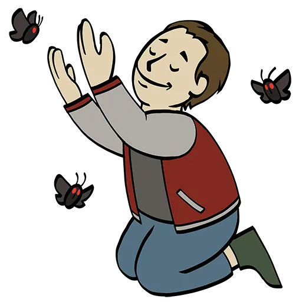
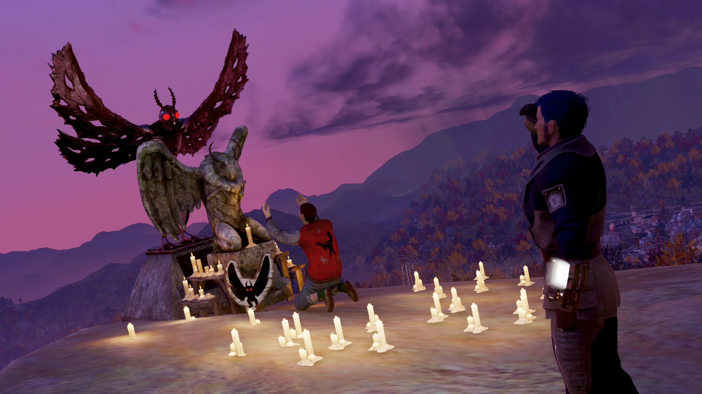
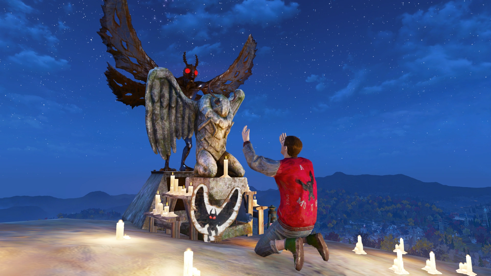
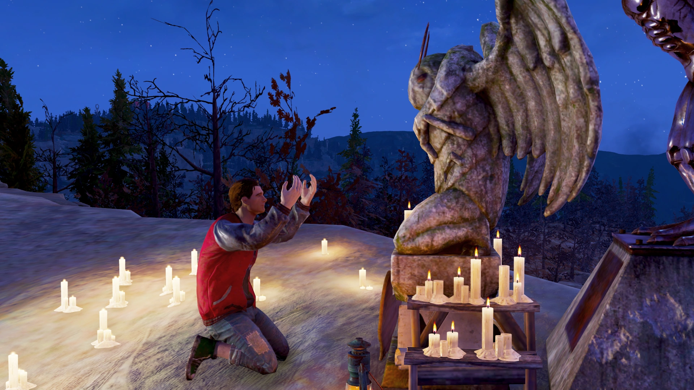
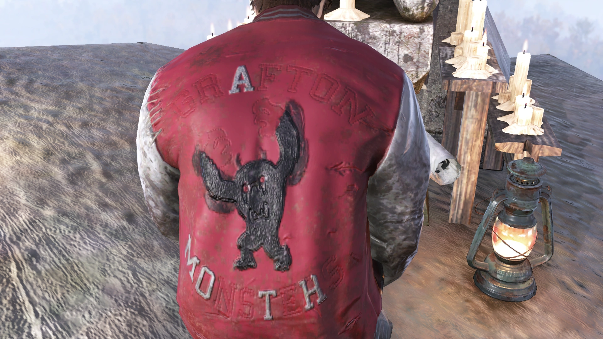
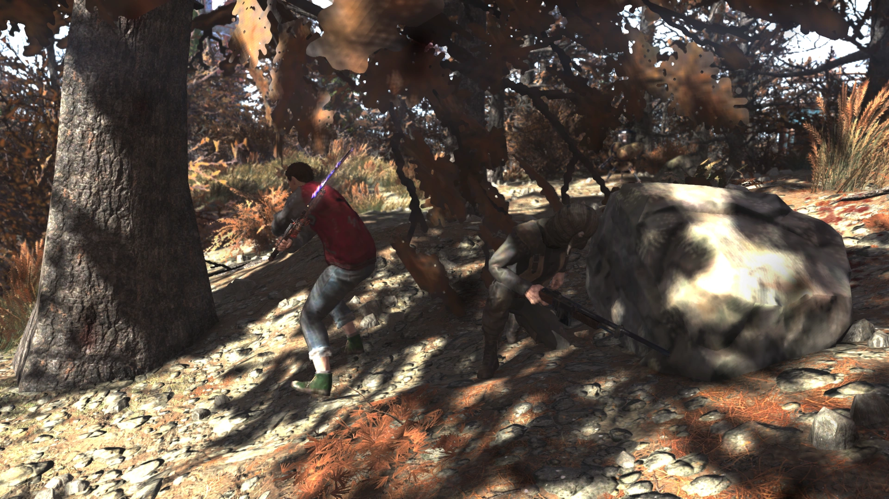
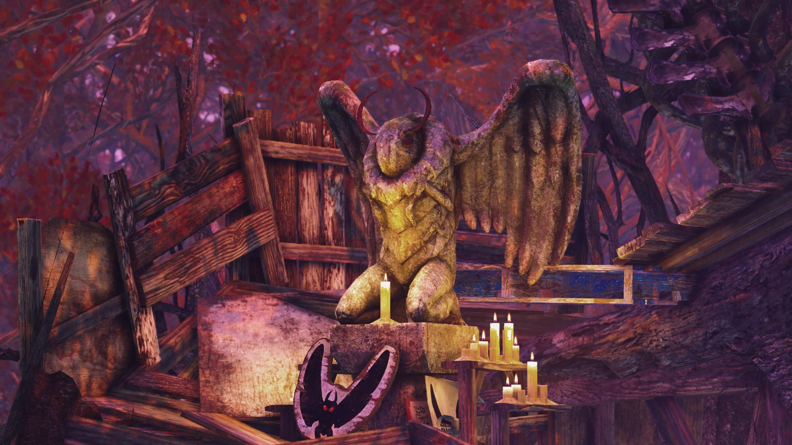
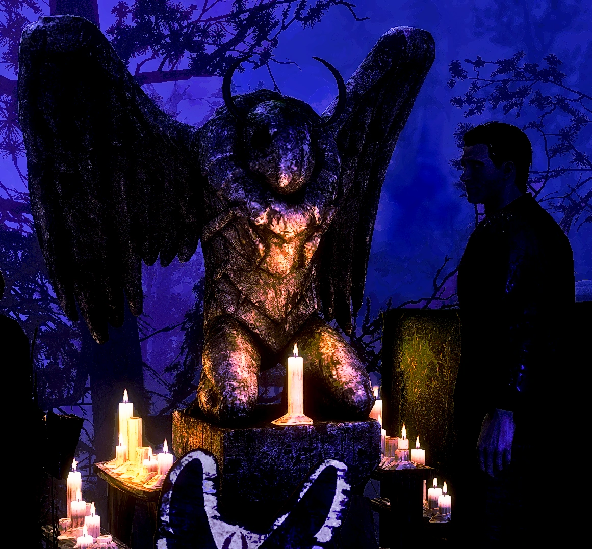
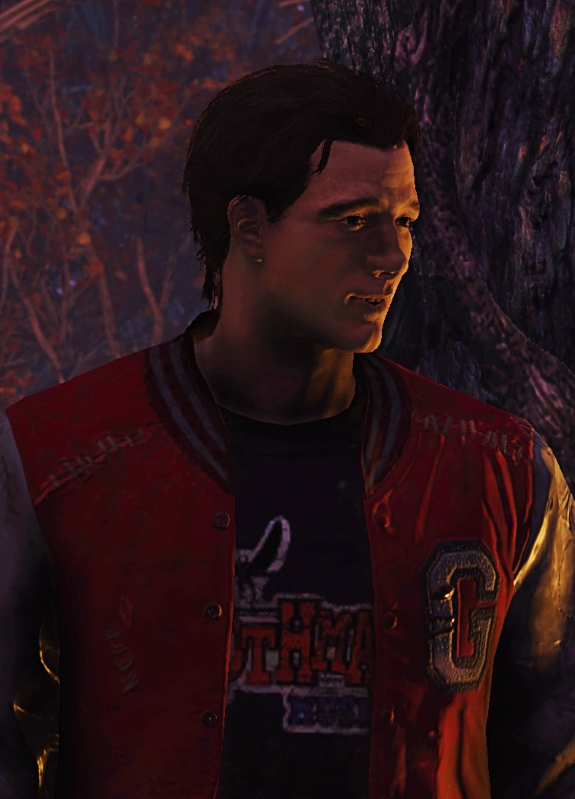
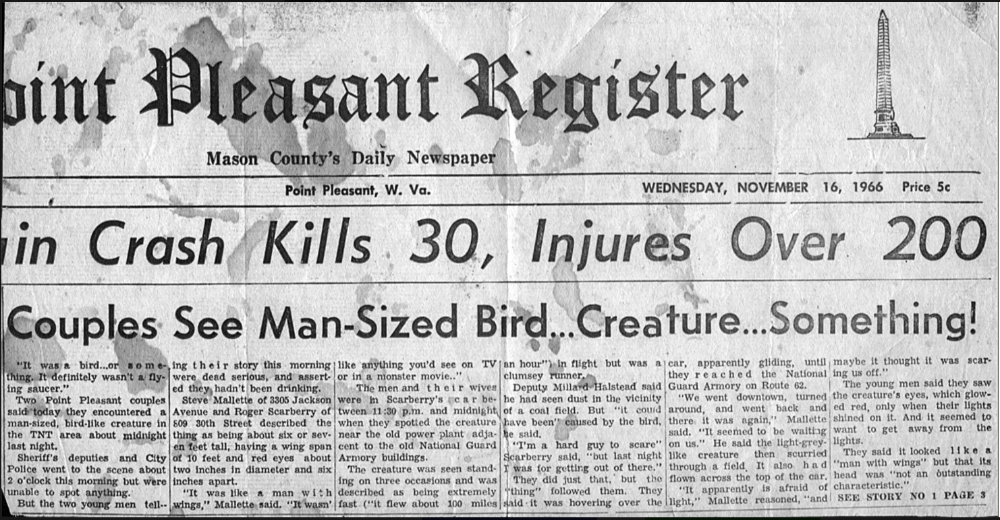

スティーヴン・スカーベリー
Brother Steven "Stevie" Scarberry — モスマン教団の巡礼者
— スティーヴン・スカーベリー
概要
ブラザー・スティーヴン「スティーヴィー」スカーベリーは、モスマン教団の一員であり、アパラチアでの同居人・行商人である。赤い目のモスマンを崇拝する「翼ある者の信徒」に所属し、「光明を得し者たち（The Enlightened）」とは対立関係にある。
Fallout 76のシーズン12「Rip Daring and the Cryptid Hunt」のランク35報酬として解放される。
背景
スティーヴィーは大戦前の世界に言及しないことから、2077年の核戦争後に生まれたと推測される。赤ん坊の頃、両親はモスマン自身に見出され選ばれたとされ、その後両親はモスマンに食い殺されたことが示唆されている。
赤ん坊のスティーヴィーはモスマンの卵の中に置かれ、そこで翼ある者の信徒たちに発見された。聖なる卵に囲まれた赤子はモスマンの祝福の印と見なされ、彼らに引き取られて育てられた。スティーヴィーは信徒たちを家族だと思っており、聖なる存在への崇拝に身を捧げている。
現在は青年となったスティーヴィーは、自らをモスマンに選ばれし使徒、その愛に祝福された魂の持ち主と信じている。モスマンを自分自身で見つけるため、「アパラチアの聖地」への数か月に及ぶ巡礼の途上にあり、儀式に必要なアルビノの血を探している。巡礼は、モスマンの目を直視してその偉大な真実を目にした時に終わるという。
プレイヤーとのインタラクション
- 不死属性: あり
- 同居人: スカーベリーの祭壇を設置可能
- 行商人: 各種アイテム
- バフ: 真のモスマンの祝福（XPバフ）
プレイヤーの行動による反応
- モスマン教団関連の服装を着ているとコメントする（自分の宗派の服なら好意的、光明を得し者の服なら否定的）
- プレイヤーの放射線量が高いとコメントし、「あなたは完全に輝いてる。何か高いところに登ってぴょんぴょん跳ねてくれない？ モスマン様を引き寄せられるかも」と言う
- Intelligence 8以上のチェックで「赤ん坊の頃にモスマンの卵の中に置かれたのは、子供に食べさせるためだ」と指摘できる（スティーヴィーは激しく否定する）
- 「False Gods of Appalachia」を読んでいれば、インターローパーについて尋ねることができる（スティーヴィーは口を閉ざし話題を変えるよう懇願する）
- 「お前が崇拝してるのはただの虫だぞ」と言うことも可能だが、スティーヴィーの信仰はむしろ強まり、プレイヤーの懐疑を巡礼の試練と解釈する
トリビア
- アイドル台詞「この悪夢がどうしても消えない。永遠の闇の中を漂い続けて…もし、モスマン様の光を見つけられなかったら？」は、ソフィア・ダゲールのセリフとほぼ同一。76プレイヤーの間でミームになった有名なセリフの引用
- 祭壇の近くに「The Man The Moth The Legend」というタイトルの本があり、表紙にモスマンの落書きがある
- モスマン教団員でありながら、C.A.M.P.に現れた敵対的なカルティストには躊躇なく攻撃する
- 放射線を「光」として視覚的に知覚できると主張（ジェラード、デヴィン、マザー・キュリーIIIなどにも見られる現象）
- 「空から光が落ちてきた。モスマン様かと思ったが、あったのは金属と煙とガレキだけ。それとぼやけた、青いシャツの男の絵」— これは初代Falloutに登場するUFO墜落地点の「ファジー・ペインティング」への言及
- 「Mothwoman」の存在を疑問視するセリフは、同居人のサム・グエンも同様のセリフを持つ
名言集
ギャラリー









制作裏話

- SkyBox LabsのRyan Whiteがスティーヴンのライターを担当。Grandma JunkoやAdelaideも同じライター
- 姓の「スカーベリー」は、1966年11月に最初のモスマン目撃を報告したリンダ＆ロジャー・スカーベリー夫妻に由来
- スマイリング・マン（インドリッド・コールド）に出会ったことを示唆するセリフがあり、声優のRobbie Daymondはスマイリング・マンと兼役
- ソフィア・ダゲールの悪夢のセリフをほぼ同一の形で引用。76ファンの間でミーム化した有名なセリフ
- 「Mothwoman」の存在への疑問は、同居人サム・グエンのセリフと類似
登場作品
スティーヴン・スカーベリーはFallout 76のMutation Invasionアップデートに登場する。
スティーヴン・スカーベリーって、Fallout 76の仲間の中でもかなり異色の存在ですよね。
赤ん坊の頃にモスマンの卵の中に置かれて、それを「祝福」と解釈して育てられたっていう出自がもう完全にホラー映画の設定。
でも本人は恐ろしいほど純粋で、数か月も巡礼を続けながら「蝋燭のように信仰が揺らいでいる」と告白するところにグッとくる。
「お前が崇拝してるのはただの虫だぞ」って言い放っても、それすら巡礼の試練として受け入れちゃうところが、信仰の怖さと美しさを同時に見せてて上手い。
あと、ジャケットの「Grafton Monsters」を「A MOTH」に刺繍し直してるの、こういう細かいビジュアルの作り込みが76の良いところ。
ソフィアの悪夢のセリフをほぼ丸パクリしてるのもファンサービスが効いてて笑えます。
This article was created by translating and editing Steven Scarberry from Nukapedia: The Fallout Wiki.
Licensed under the Creative Commons Attribution-Share Alike License (CC BY-SA 3.0).
コミュニティ維持のため、寄付を受け付けております。
> COMMENTS